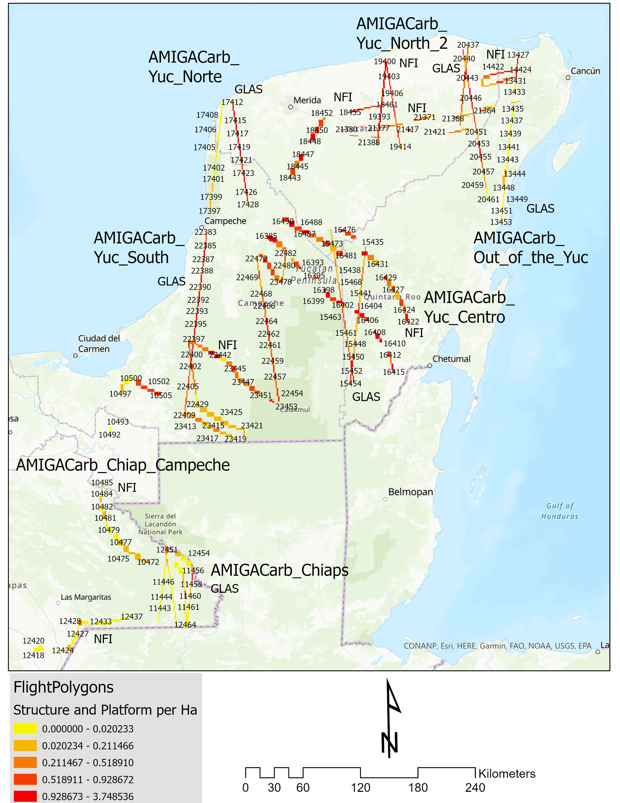
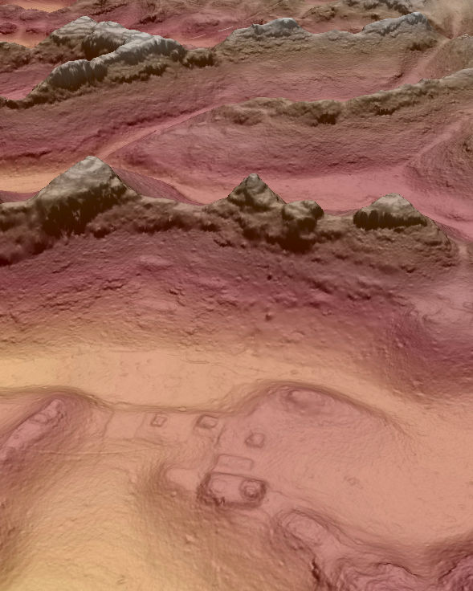

Lower Lacantún Archaeological Project
Located in the southern Mexican state of Chiapas, the Lower Lacantún Archaeological Project investigates long-term resilience and risk mitigation across diverse communities dating to the Maya Late Classic (600-850 CE) and Early Postclassic periods (850-1100 CE). The alluvial floodplain environment at the confluence of the Lacantún and Usumacinta Rivers presented opportunities and challenges that communities and local leaders navigated in the past, and their choices and modifications to the landscape continue to influence populations in the region today. Preliminary research has been published in World Archaeology.

Environmental LiDAR
In 2013, the NASA Goddard Space Flight Center's G-LiHT system collected LiDAR data over southern Mexico for a REDD+ study of above ground biomass. The reanalysis of these data for archaeological terrain modeling has provided opportunities to investigate a cross-section of Maya cultural landscapes. This research, funded by the National Science Foundation and NASA is part of an international project to understand the relationship between settlement, demography, and agricultural intensification. This research has been published in the Journal of Archaeological Science: Reports.
Community Resilience and Socioenvironmental Crisis
The archaeological site of El Infiernito located in the modern ejido of La Selva, Ocosingo, was a fortified settlement occupied over several centuries. First settled during the Late Preclassic period (100 BCE-350 CE), the site represented a small, fortified civic ceremonial center. Reoccupation of the site during the Late Classic (550-850 CE) to Early Postclassic periods (850-1100 CE) took advantage of the site's infrastructure to protect the community from the socioenvironmental crises and political transformations at the time. This research has been published in Landscape Research.
